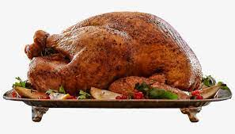

How to make Thanksgiving Turkey?

Description
The BEST Thanksgiving Turkey recipe that packs all of the flavor and juiciness you expect from the perfect Thanksgiving turkey, with none of the stress! Plus a step by step tutorial for how to cook the perfect turkey.
Ingredients
- 2 tablespoons ground dried rosemary
- 2 tablespoons rubbed dried sage
- 2 tablespoons dried thyme leaves
- 1 tablespoon lemon-pepper seasoning
- 1 tablespoon salt
- 1 (15 pound) whole turkey, neck and giblets removed
- 1 medium orange, cut into 8 wedges
- 1 medium onion, chopped into large pieces
- 1 medium carrot, cut into 1/2-inch slices
- 2 stalks celery, cut into 1/2-inch slices
- 1 (14.5 ounce) can chicken broth
Steps
- Season turkey: Stir together parsley, rosemary, sage, thyme, lemon-pepper, and salt in a small bowl. Rub the cavity of the turkey with the herb mixture, then stuff the cavity with celery, orange, onion, and carrot.
- Prepare turkey: Place the turkey in a roasting pan lined with foil long enough to wrap around the bird. Pour Champagne and broth over the turkey, making sure to get some of the mixture inside the cavity.
- Roast turkey: Bring the foil over the turkey and seal. Roast in a preheated oven until the juices run clear. Uncover the turkey and continue roasting until the skin turns golden brown.